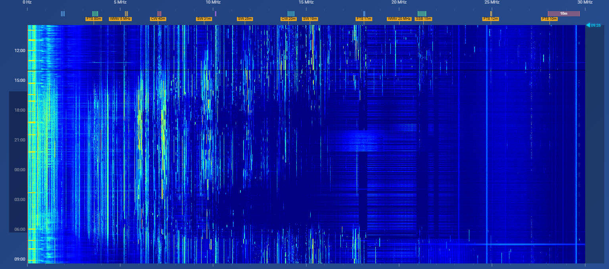

QRM sichtbar machen: das UberSDR-Messjournal
Noise Floor, Zeitvergleich und Spektrogramm in Luzern gezielt nutzen – vom ersten Blick bis zum reproduzierbaren Versuch.

Aufnahme: HB3XDC
Drei Ansichten, drei Fragen
Ist das Band gerade laut? Wann tritt eine Störung auf? War es gestern anders? Die Auswertungsseiten des Luzerner UberSDR ergänzen den hörbaren Empfang um zeitliche Zusammenhänge. Sie sind keine kalibrierte Messung der Feldstärke an deiner eigenen Antenne: Gemessen wird am entfernten Empfangssystem.
1 · Noise Floor: den aktuellen Zustand ansehen
Öffne Noise Floor. Unter „Select Band“ wählst du zuerst ein Band, etwa 80 m, statt alle Bänder zugleich zu beurteilen. „Live Data“ zeigt den aktuellen Verlauf; „Historical“ führt zu früheren Daten. Das HF-Spektrum lässt sich über Frequency und Width eingrenzen. Die Verlaufsdiagramme stellen unter anderem Noise Floor, Dynamic Range und FT8 SNR über 24 Stunden gegenüber.
P5 bezeichnet das fünfte Perzentil: Nur ein kleiner Teil der ausgewerteten Spektralwerte liegt darunter. Es dient als Schätzung des unteren Pegelniveaus, nicht als garantiert reines thermisches Rauschen. P95 ist entsprechend ein oberer statistischer Pegel und nicht zwingend der stärkste einzelne Sender. Ein belegtes Band, die Antenne und Verstärkungseinstellungen beeinflussen diese Grössen.
2 · Aggregate Analysis: gleiche Zeitfenster vergleichen
- Aggregate Analysis öffnen und bei Primary Time Range Start und Ende wählen.
- Für einen ersten Versuch nur 80 m sowie Noise Floor und Dynamic Range markieren. Weniger Kurven machen Unterschiede leichter erkennbar.
- Als Intervall „Hour“ wählen und „Analyse Data“ starten. „Minute“ zeigt kürzere Vorgänge, gröbere Intervalle glätten sie.
- „Enable Comparison Range“ aktivieren und beispielsweise denselben Zeitraum am Vortag wählen. Gleiche UTC-Stunden sind aussagekräftiger als beliebige Tagesmittel.
- Mit „Export CSV“ die Daten zum eigenen Stationsjournal sichern.
Ein geringerer Rauschpegel allein beweist keine bessere Antenne. Wenn Nutzsignale gleich stark abnehmen, hat sich der Signal-Rausch-Abstand möglicherweise kaum verändert. Bei Umbauten deshalb Einstellungen, Kabel und bekannte Vergleichssender dokumentieren.
3 · Spektrogramm: Frequenz und Zeit zusammen lesen
Das Wideband Spectrogram zeigt auf der waagrechten Achse die Frequenz und senkrecht den Zeitverlauf. Die aktuelle Oberfläche beschreibt eine Zeile als eine Minute; neuere Daten stehen unten. Helle Farben bedeuten höhere Pegel innerhalb der gewählten Farbskala.
In meiner Aufnahme siehst du einen grossen Teil der Kurzwelle über viele Stunden. Schmale senkrechte Linien sprechen für länger belegte Frequenzen. Breite zeitlich begrenzte Aufhellungen können Rauschänderungen, Ausbreitung oder lokale Einflüsse zeigen. Das Bild allein identifiziert deren Ursache nicht.
- Datum / Rolling 24h: einen Tagesausschnitt oder die letzten 24 Stunden wählen.
- Band / Window: auf eine Frequenzregion und beispielsweise die letzten drei Stunden eingrenzen.
- Floor / Ceiling: unteres und oberes Ende der Farbskala ändern. „Auto“ setzt den Kontrast zurück. Diese Regler verändern die Darstellung, nicht die Empfindlichkeit des Empfängers.
- Times: bewusst UTC, Receiver Time oder Local Time wählen. Für Vergleiche immer dasselbe Zeitsystem verwenden.
- Zoom: mit dem Mausrad vergrössern, ziehen zum Verschieben, doppelklicken zum Zurücksetzen. Der Mauszeiger zeigt Frequenz, Zeit und Pegel.
Ein Versuch für heute Abend
Notiere zwei kurze Empfangsfenster auf 80 m mit identischer Betriebsart und Filterbreite. Höre zuerst, sichere dann die passende Ansicht und vergleiche P5 sowie Nutzsignal. Ergänze den Funkwetter-Verlauf. Wiederhole den Versuch am nächsten Tag. So entsteht eine prüfbare Beobachtung statt eines Eindrucks nach einem einzelnen Screenshot.